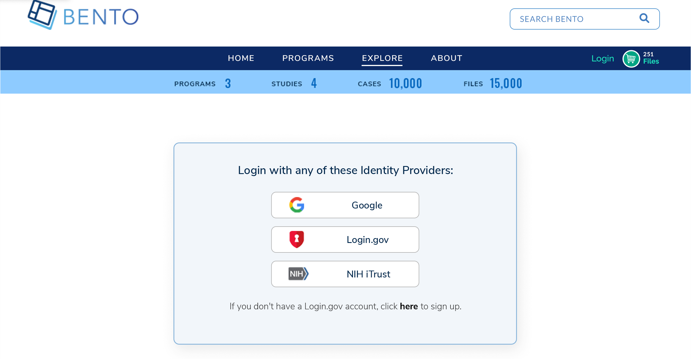

1. Authentication¶
Service only available for cloud installations of the Bento Framework
1.1. Introduction¶
The Bento Framework provides an OIDC-compliant authentication (AuthN) service so that Bento-based platforms have the ability to authenticate users. Authentication can be enabled or disabled. Bento currently supports several identity providers (IdPs) and a single IdP or multiple IdPs can be configured for any given Bento platform. The configured IdPs will appear on the Bento login page and will allow users to select an account type before redirecting to the specific Login page of the selected IdP. The default behavior will redirect any unauthenticated users to the Bento Login page if attempting to access protected pages. Google is the current default IdP.

1.2. Prerequisites¶
The files that specify the configuration parameters for authentication are stored in the GitHub repositories
https://github.com/CBIIT/bento-frontendandhttps://github.com/CBIIT/bento-backend. Create a local clone of your fork into a local directory, represented in these instructions as$(src).Configuration parameters for RBAC elements can be specified in the file:
$(src)/bento-backend/src/main/resources/application.propertiesConfiguration parameters for authentication UI elements can be specified in the file:
$(src)/bento-frontend/src/bento/siteWideConfig.jsand$(src)/bento-frontend/src/bento/userLoginData.js.
1.2.1. Configuring Authentication¶
* Acceptable values for auth.enabled are "true" or "false". This value is important for determining Public Access. Refer to Authorization configuration for details.
* If value is true, the service will require a user to login before API calls can be made
* If value is false, the service allows API calls to metadata before login
1.2.1.1. Example¶
Edit file:
$(src)/bento-backend/src/main/resources/application.propertiesUpdate field: auth.enabled
auth.enabled=false
Edit file:
$(src)/bento-frontend/src/bento/siteWideConfig.jsSet the field
enableAuthenticationto True or FalseSet the field
authProvidersto google, nih, or loginGov
export default {
// Suggested for replaceEmptyValueWith: 'N/A' or '-' or ''
replaceEmptyValueWith: '',
// Enable authentication
enableAuthentication: true,
// List for options for authentication empty array defaults to google
authProviders: ['google', 'nih', 'loginGov'], // authEndPoint: []
};
1.2.2. Configuring the Display of Identity Providers¶
The displayed icons and button text for IdPs are configurable
1.2.2.1. Example¶
Edit file
$(src)/bento-frontend/src/bento/userLoginData.jsSet the path for the icon field.
Enter the text for the loginButtonText field.
export const loginProvidersData = {
google: {
key: 'google',
icon: 'https://raw.githubusercontent.com/CBIIT/datacommons-assets/main/bento/images/icons/png/google.png',
loginButtonText: 'Sign in with Google',
},
loginGov: {
key: 'loginGov',
icon: 'https://raw.githubusercontent.com/CBIIT/datacommons-assets/main/bento/images/icons/png/login.gov.png',
loginButtonText: 'Sign in Login.gov',
},
nih: {
key: 'nih',
icon: 'https://raw.githubusercontent.com/CBIIT/datacommons-assets/main/bento/images/icons/png/nih_itrust.png',
loginButtonText: 'Sign in NIH iTrust',
},
};